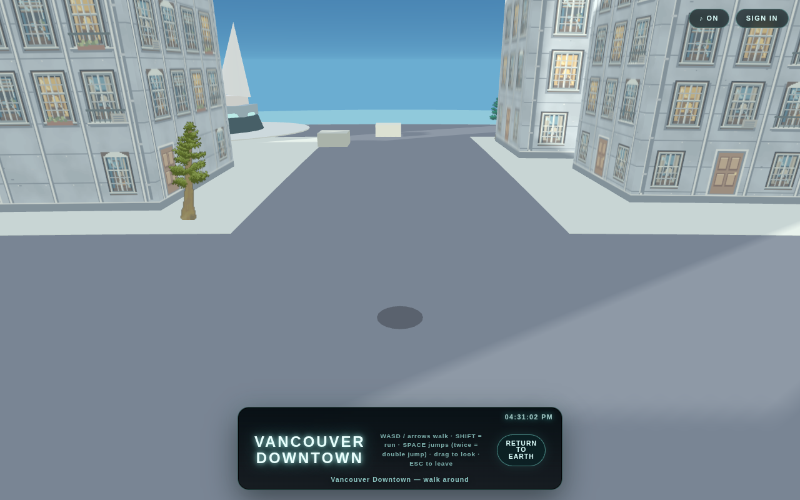
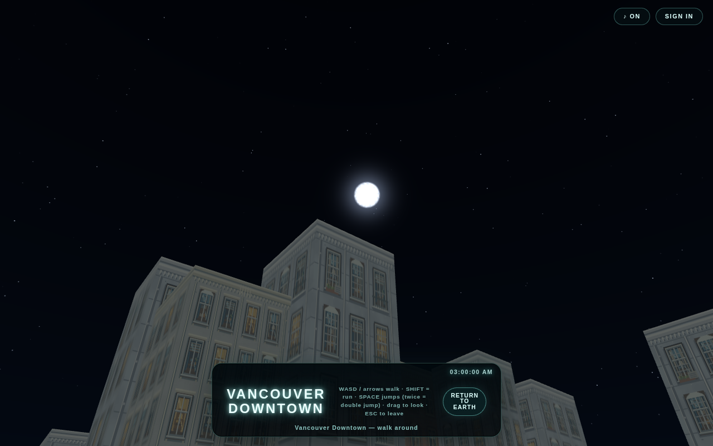

han.espil.onlineThe Portfolio IssueVancouver, BC — Nº 01 · 2026
Espil.
Web Developer & Designer — the portfolio of HanBin Im
Issue Nº 01 — Portfolio · Vancouver, BC
The Briefing
A proven builder who converted to vibe coding
I am a web developer and designer based in Vancouver, BC. I have been building for the web since 2015 — and on computers since the DOS era. My headline skill today is AI-assisted development: I direct the tools, review and edit the code myself, and ship end-to-end. I currently build Espil.Online, a live interactive 3D map, on top of a decade of client sites, internal systems and experiments — most of which I scoped, designed, built and ran myself.
Based
Vancouver, BC, Canada
Experience
Building for the web since 2015; computers since the DOS era
Focus
Espil.Online — an interactive 3D map of a living world
Strength
Cultural fluency — Korean / Mandarin / English, all fluent
Status
Open work permit (PGWP) valid until October 2028 — no LMIA or sponsorship required
Origins
I was born in South Korea, but I only lived there until I was seven — my elementary schooling was in China, before Canada. I have been on computers since the DOS era, learning from grade 3 and building my first HTML pages as a child. Photoshop and Illustrator since high school, Dreamweaver in my web toolkit — and my high-school design work was already in use, by the Coquitlam Hall of Fame and my school soccer team.
Growing up across Korea, China and Canada gave me the cultural fluency I still work with every day: I read rooms, clients and audiences in three languages and three cultures, and I have run four-language web channels single-handedly. It is one of my real professional strengths, not a footnote.
01 — Cover Story
Espil.Online

Espil.Online — walk the streets of a living 3D world, in the browser.
Espil.Online is a live, interactive 3D map at espil.online — a Three.js world of real cities where you can walk the streets, and shop, drive, fly and dive with friends. I design it, build it AI-assisted, and ship it end-to-end myself: engine, interface, pipeline, sound and channels.
“The world is listening.”Espil.Online — its own title line
The World in the Cauldron (가마솥안 세상)
Everything I make is one connected world. Every project is a door; every door opens to the same world.
The Cauldron — my 2025 browser-RPG prototype; the seed Espil.Online grew from.
VODS — Virtual Online Department Store — the retail layer of the world.
Zealandia — a 2D side-scrolling game extension of the same universe.
Espil House Collection — my OpenSea 3D houses; the future housing layer of Espil.Online.
The Secret Diary of Espil Ceil — the story layer, published on my Naver blog.
Plushy AI + City Studio — my own image-to-3D and sprite pipeline; the tooling layer.
Music by Espil Ceil — I compose and produce the BGM myself, a theme per city.
Channels — Instagram, YouTube, Naver and Facebook, speaking in one voice.
02 — The Record
What I have done, in order
Pre-2010 — Origins
First Computers, First Pages
I was born in South Korea and lived there until I was seven; my elementary schooling was in China, before Canada. I have been on computers since the DOS era — learning from grade 3, building my first HTML pages as a child. Photoshop and Illustrator since high school, Dreamweaver in my web toolkit — and my high-school designs were already in real use, by the Coquitlam Hall of Fame and my school soccer team.
May 2024 – Feb 2026
Operations Coordinator — Discover Holidays
I alone produced the entire Alaska + Canada tariffs under the Founder's direction — hundreds of pages of price sourcing, data entry, image work and posters. To escape the manual workflow I built my own Python tool on the company intranet API (bulk typo-finding and correction, price and property search) and wrote macros that finished a job estimated at several months in one day. The tariff content itself is company-confidential; the scale and the process are the story. Operations taught me that accuracy is paramount — and exactly which steps buy speed.
May 2014 – Dec 2024
Web Designer — Bieclipse Design + UseDesign
My own design practice for a decade: client websites, portfolios and systems — including a dermatology clinic's complete web system (design, landing, chatbot reservations, online booking) and a website for a PhD client, Monicahan. Through Bieclipse Design I also contributed to numerous other client design and website projects, including builds that were delivered but never launched.
Jan 2018 – Jan 2026
Cook — Sushi Umi
Eight years in a working kitchen alongside everything else. I documented the kitchen's recipes into a standardized, bilingual (Korean/English) recipe system — 21 recipes, one format, any cook, same taste. When a digital QR menu was requested, I declined it: the shop exists for its locals and for real taste, and a screen menu clashed with that philosophy.
Jun 2019 – Dec 2021
Full Stack Developer — HAN Mobile
I was hired in sales. I grew through marketing and design work into the company's full-stack developer — and its backend person. I migrated the entire Excel-based customer list into a real database, fully manageable through CRUD, on top of an intranet CMS, dashboards and OCR-based PDF data entry.
2022 – 2023
IT Specialist — Higgs Creative Inc
I was headhunted and funded by dermatology doctors and business owners to test healthcare software — electronic medical records, CRM tooling and OCR — and to cover the company's IT needs.
Dec 2020 – Dec 2021
Marketer — Nohproblem Consulting
I was hired as a marketer and ended up running far more: I managed all of the company's websites — including four different language channels — plus its YouTube channel, SNS and blogs, video editing and official documents. I also handled total landing-service care for immigration clients: house search, cars, furniture, schools, driver's licences.
Sep 2019 – Apr 2020
Sales Representative — Freedom Mobile
Front-line sales and customer service — and after the sales work, I designed and developed the store's intranet.
May 2015 – May 2016
Graphic Designer — OK Tour
I was hired as a graphic designer and worked as a travel rep, producing the daily brochures customers travelled with — trip plans and personalised infographics, designed to be read at a glance.
Digital Design Development — BCIT. Graphic design, web development, web-based marketing and project management.
2016 – 2017
Chinese Medicine studies — PCU College of Holistic Medicine. Herbalism, acupuncture, anatomy.
2010 – 2012
Fine Arts studies — Emily Carr University of Art + Design. Drawing, painting, photography, design.
2007 – 2009
Sentinel Secondary School — West Vancouver. Before that, Balmoral Junior Secondary; in 2006–2008 I served in the 103 Thunderbird Squadron, Royal Canadian Air Cadets (rank: Corporal).
03 — Selected Works
Fourteen doors into the same world
Espil.Online
A live interactive 3D map of a living world, built with Three.js and shipped end-to-end by me — engine, UI, pipeline, sound, channels. → This issue's cover story.
The Cauldron
My 2025 Mapbox browser-RPG prototype — character creation, start regions from Tokyo to Vancouver, a world map and an in-world AI guide. → The seed Espil.Online grew from.
Zealandia
A 2D side-scrolling adventure in development, set in the same universe — playable lands beyond the map. → The game extension of Espil.Online.
Plushy AI
My local image-to-3D/sprite pipeline: I built it to generate game assets on my own hardware, solving a cost and IP problem instead of renting one. → The tooling layer of Espil.Online.
City Studio — Vancouver Sprite Pack
Using my City Studio pipeline I produced a 44-building Vancouver sprite pack — towers, houses, civic and commercial buildings — and I sell it on itch.io. → The production pipeline behind the Espil.Online city.
Espil Ceil — Animation Series
An animated series in production, carrying Espil's characters and music out of the map and onto the screen. → The world of Espil.Online, animated.
The Secret Diary of Espil Ceil
My novel — the original diary of the world, published on Naver Blog (espil_online). The Cauldron's name and its stories start here. → The story layer of Espil.Online.
Apex Dermatology — Complete Web System
For a dermatology clinic I built the whole web presence as one system: the Figma design, the Apex Derm landing site, a chatbot reservation flow, and QDerm online booking with calendar sync and email notifications.
Sushi Umi — Kitchen Recipe System
I wrote and formatted the Sushi Umi kitchen's standardized bilingual recipe book — 21 recipes in one consistent format (the format is the work; the quantities stay in the kitchen). When a digital QR menu was proposed, I declined it — it clashed with the shop's philosophy.
Kuro Sushi
A sushi bar identity and web design in Figma — an original concept and a revised “Live” version — and I also produced the restaurant's physical signboard.
Ongijongi
For Ongijongi, a non-profit Korean musical organisation in Vancouver, I performed as an actor, led the marketing team, and for a period ran its website, member registration and media platform. Our original production was covered by YTN.
Ryde × TransLink
A BCIT transit project that integrated the TransLink API wholesale — real routes, real data, end to end. My backend-and-API proof from school, built like a product.
Espil House Collection
Two OpenSea collections (2022) of my 3D houses — VR-ready homes with full trait sheets, built with SketchUp, Enscape, Blender and the web. → The future housing layer of Espil.Online.
The Universe house, rendered in Enscape — walk through it in 3D at /universe/.
VODS — Virtual Online Department Store
A retail layer concept derived from Espil.Online: the world's shops, gathered into one department store. → A branch of Espil.Online.

The same world, after dark.
Full Index
The Complete Archive
Everything else I have made and kept — every subdomain of my old network was one of my records, so all of it is listed. Compact, dated, and honest about what each thing is.
Portfolio Lineage & Houses
HBI — HighSchool Artworks2021 — a 3D flip-book of my 2006 charcoal works; from the same school years when my designs were already in real use (Coquitlam Hall of Fame, school soccer team).
Resume — Minihompi / Recruiter Dossier — my single-page interactive resume and dossier site.
MROS — an Enscape 3D architectural viewer; also the free sample house for my OpenSea collection.
Universe2022 — an Enscape 3D viewer for the “Universe” house, item #2 of the House Collection.
Hexagon Palace — house #1 of my Espil House Collection on OpenSea; its showcase lives with the collection.
HanBin 2023 — a 3D flip-book that opens into MROS.
Fish Bowl 2023 — a CSS fish-bowl animation study.
Clinic, Commerce & Client Sites
IMCHOICHOI2022 — a Korean cosmetics drag-to-cart shopping demo.
Apex Derm2023 — the clinic's mobile-first landing, framed like the phone it lives on.
APEX DERM Reservation2023 — a Peekobot chatbot that takes reservations for the clinic.
QDerm Clinic2023 — online booking for the dermatology clinic, with calendar sync and email notifications.
Monicahan — a website I built for a client, Monica, a PhD.
Through Bieclipse Design, I also contributed to numerous other client design and website projects beyond those listed here — including builds that were delivered but never launched.
CWA 2024–25 — a full WordPress build, cache-tuned.
Capilano Theft Auto2024 — a GTA-inspired game concept for Capilano University, with its own CTA Bot. Its online twin, Capilano Theft Online, was my real-earth experiment: Unity + Photon multiplayer over a Google Earth map (Cesium), a character set loose on the real city — VR was the goal; practical limits said otherwise. The experiment the current Espil.Online map grew from.
OpenAI Presentation 2023 — “OpenAI — Decision Making”, presented as a 3D flip-book.
Capilano-Theft-Auto — the Unity project behind Capilano Theft Online: Photon PUN multiplayer + Cesium Google-Earth 3D tiles.
COVID19 Data Visualization for HoloLens 2 — mixed-reality data visualisation.
paragram — a social app experiment.
Plus smaller coursework and utility repositories.
…plus several reserved project codenames, kept for worlds not yet opened.
04 — Capabilities
Seven departments, one person
AWeb & Interface
I design and build responsive websites and interfaces end-to-end — from first sketch to shipped page — in HTML, CSS and JavaScript, with React and Three.js/WebGL where the work calls for them.
BDesign & Visual
Twenty years of visual craft: brand, layout, 2D and 3D. My high-school designs were already in real use; my clinic, restaurant and retail clients still run on systems I designed.
CFull-Stack & Data
I am not frontend-only. At HAN Mobile I was the backend person — I migrated an entire Excel customer list into a database with full CRUD — and at BCIT my Ryde project integrated the TransLink API wholesale.
DAI-Assisted Development
My headline workflow. I build with AI assistance — directing the tools, reviewing and editing the code myself, and choosing the right stack for each job. It is how Espil.Online ships, and how I built Plushy AI, my own local image-to-3D pipeline.
EOperations & Automation
Operations work taught me where hours actually go. At Discover Holidays I wrote Python tooling on the intranet API and macros that cut a months-long job to one day — accuracy first, then speed, in that order.
FMusic & Sound
As Espil Ceil, I compose and produce original BGM — including a per-city theme system for Espil.Online. Sound is part of the product, not an afterthought.
GLanguages & Cultural Fluency
I grew up across Korea, China and Canada. Korean, Mandarin and English — all fluent. At Nohproblem I ran four-language web channels alone; cultural fluency is a working tool for me, not a line on a form.
My Toolbox — Everything I Use
Design & Media
Adobe Photoshop
Adobe Illustrator
Adobe Dreamweaver
Adobe video editing
Blender
Google SketchUp & V-Ray
Meta Spark
Figma
Development
HTML / CSS / JavaScript
React
React Native
MERN stack (MongoDB, Express, React, Node.js)
WebGL / Three.js
WordPress
Git
Node.js
Command line
Python (automation & API tooling)
Computer hardware diagnosis & repair
Platforms & Business
AWS (as listed on my resume)
Azure (as listed on my resume)
Kubernetes (as listed on my resume)
Web analytics
Big data
Web administration
Project management
Presentation
Sales
Languages
Korean — fluent
Mandarin — fluent
English — fluent
05 — Correspondence
Write to me
I am looking for full-time remote web development work. The fastest way to reach me is email; the fastest way to judge me is the live project.